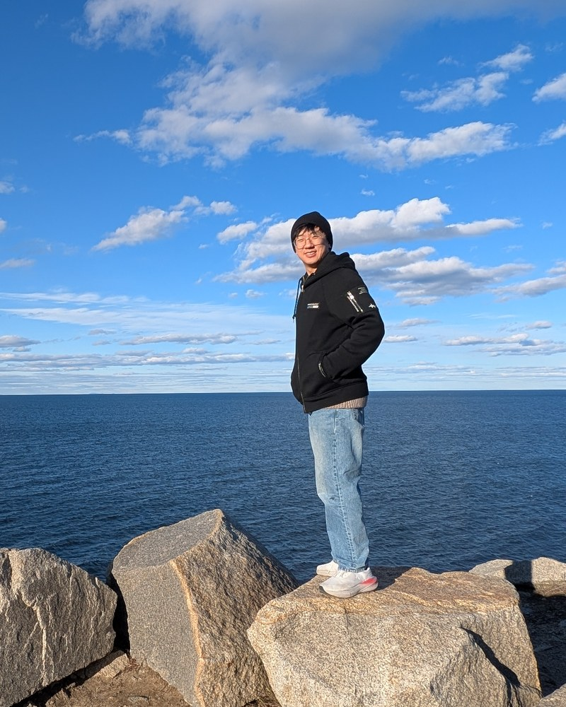
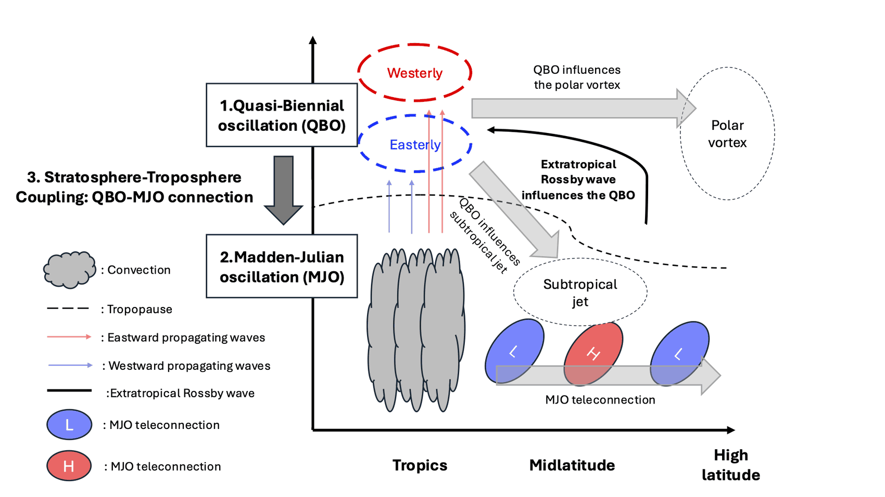

Tropical atmospheric dynamics
Postdoctoral researcher at the University of Chicago. I study the tropical troposphere, the stratosphere, and the coupling between them — currently through the MJO and the QBO.

About
I study the dynamics of the tropical atmosphere, from the equatorial stratosphere down to the convecting troposphere. My work centers on the Quasi-Biennial Oscillation and the Madden–Julian Oscillation, and on the coupling that runs between them.
I am a postdoc with Prof. Tiffany A. Shaw. I received my Ph.D. at Seoul National University under Prof. Seok-Woo Son and Prof. Daehyun Kim.
I am a scientist exploring the dynamics of tropical atmospheric phenomena.
The tropics are the primary energy source for Earth’s climate system. This region hosts a wide variety of atmospheric phenomena that influence global weather and climate. Among them, planetary-scale phenomena such as the Quasi-Biennial Oscillation (QBO) and the Madden–Julian Oscillation (MJO) have far-reaching impacts on global climate. As such, both are considered potential predictability sources on subseasonal-to-seasonal timescales, making their realistic simulation essential. Although the simulation of both phenomena in climate models has improved over the past several decades, significant challenges remain. To address these challenges, I investigate the underlying mechanisms of these phenomena using theory, observations, and a hierarchy of numerical models.

The QBO is the dominant mode of variability in the equatorial stratosphere, characterized by alternating easterly and westerly zonal winds with a period of approximately 28 months. In the 2015/16 winter, the QBO experienced an unexpected disruption, and this occurred again in the 2019/20 winter. While several hypotheses have been proposed based on reanalysis data, the disruption mechanism has yet to be understood from a modeling perspective.
My research aims to develop a holistic understanding of the physical mechanisms that cause disruption, using a combination of theory and a hierarchy of numerical model simulations. Based on the theory of Plumb (1977), I investigate the QBO in simulations ranging from idealized radiative-convective equilibrium models to comprehensive climate models. By bridging theory, observations, and numerical models across different complexity levels, I aim to develop a scaling theory for the factors controlling future QBO disruptions.
The MJO is the dominant mode of intraseasonal variability in the tropics, characterized by eastward-propagating convective anomalies with a period of 30–60 days. While the MJO has traditionally been viewed as a single phenomenon, recent studies have classified its propagation into four distinct types: standing, jumping, slow-propagating, and fast-propagating.
My research investigates this MJO diversity across multiple scales, from seasonal to long-term timescales. I aim to understand the underlying dynamics of these propagation types through moisture mode theory, which highlights the role of column-integrated moisture in the tropical troposphere. I also evaluate the ability of CMIP6 climate models to simulate MJO diversity, providing insights for improving model performance.
Recent studies have revealed that the QBO modulates MJO activity, with enhanced MJO amplitude observed during the easterly phase of the QBO. However, the mechanism behind this connection remains poorly understood, and no climate model has successfully reproduced the relationship.
My research bridges this gap by reproducing the QBO–MJO connection in high-resolution simulations with the WRF model. By prescribing different stratospheric background states, I demonstrated that stratospheric conditions can influence MJO amplitude, and identified cloud–longwave radiation feedback as a key mechanism linking the QBO to MJO variability. This work connects my research on stratospheric and tropospheric dynamics, giving a more complete picture of tropical atmospheric interactions across vertical layers.
Publications
* corresponding author
{kind=link}